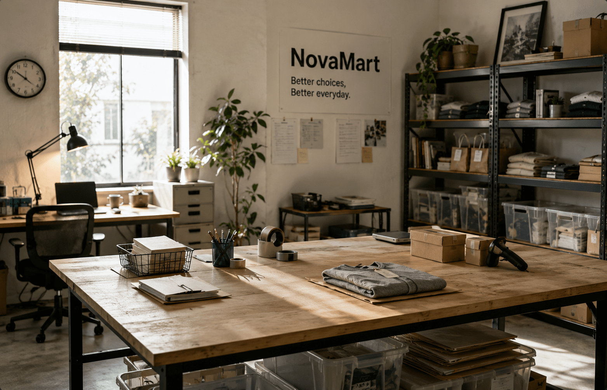

分かりやすくする
情報を増やすのではなく、必要な情報を整理する。 誰が見ても理解しやすい商品ページとサービスをつくります。
ABOUT NOVAMART
NovaMartは、毎日の暮らしに必要なものを、 より選びやすく、より分かりやすく届けるオンラインストアです。
OUR PURPOSE
家電、生活用品、ファッション、本、美容用品。 暮らしの中には、数えきれないほどの商品と選択肢があります。
NovaMartが目指しているのは、商品をただ並べることではありません。 必要な情報を整理し、比較しやすくし、 「自分に合うもの」を迷わず選べる買い物体験をつくることです。
MISSION
私たちは、商品数の多さだけを価値とは考えません。 必要な情報にすぐたどり着けること、 商品の特徴や違いを理解できること、 安心して購入を決められること。 その一連の体験まで含めて、買い物だと考えています。
VISION
選択肢が増えるほど、便利になる一方で、 比較や判断に必要な時間も増えていきます。
NovaMartは、商品情報、検索、比較、購入後のサポートまでを 分かりやすく設計し、 誰もが自分の暮らしに合った選択をできるオンラインストアを目指します。
OUR VALUES
情報を増やすのではなく、必要な情報を整理する。 誰が見ても理解しやすい商品ページとサービスをつくります。
良い点だけではなく、違いや条件も明確に伝える。 判断するための情報を誠実に提供します。
完成した仕組みに固執せず、 お客さまの声や利用状況をもとに改善を積み重ねます。
価格だけでなく、品質、修理のしやすさ、 長期的な使いやすさも商品の価値として考えます。
SUSTAINABILITY
商品を届けるオンラインストアだからこそ、 梱包、配送、商品の寿命までを考える必要があります。
商品サイズに合わせた梱包を進め、 不要な緩衝材や過剰包装を減らします。
複数商品の配送を可能な範囲でまとめ、 配送回数の削減につながる仕組みを整えます。
耐久性やメンテナンス性も考慮し、 長期間使える商品の取り扱いを増やします。
将来的な回収、再利用、リユース商品の販売を見据え、 商品を捨てずに循環させる仕組みを検討します。
OUR ROOTS
NovaMartの始まりは、オンラインショッピングは便利なのに、なぜ商品を選ぶことはこんなに難しいのか」という小さな疑問でした。

商品情報が多すぎて比較しづらいECサイトへの問題意識から、 「選びやすさ」を中心にしたオンラインストアの構想が始まる。
家電と生活用品を中心にサービスを開始。 検索、カテゴリ、商品情報の分かりやすさを重視した設計を採用。
ファッション、ゲーム、本、美容・ケアへ取り扱いを拡大。 暮らし全体を横断して商品を選べるストアへ。
特集、ガイド、比較情報などの商品選びを支えるコンテンツを強化。 より使いやすく、長く利用できるサービスを目指しています。
COMPANY